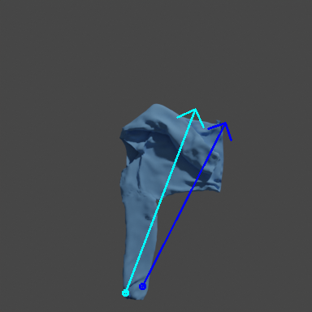
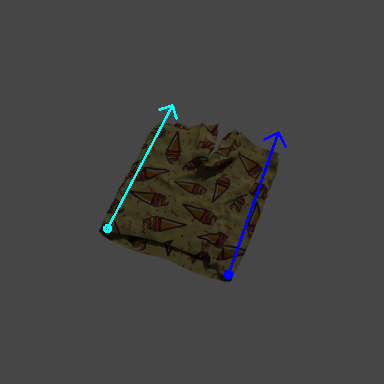
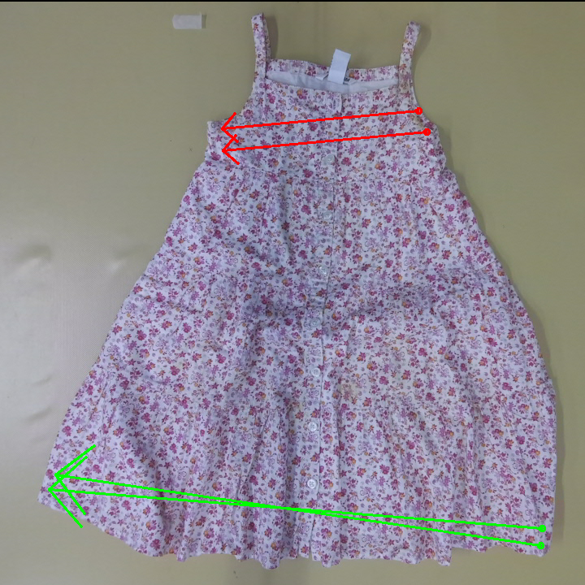
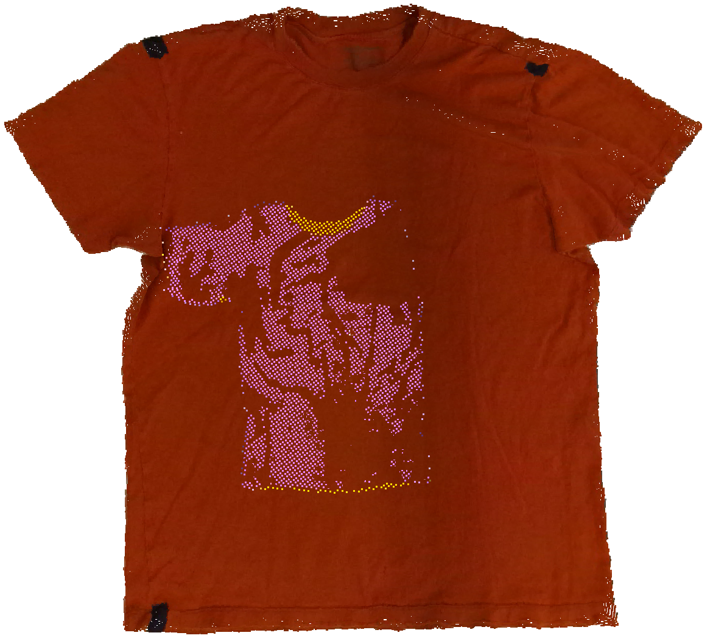

Cloth folding is a complex task due to the inevitable
self-occlusions of clothes, their complicated dynamics, and the
disparate materials, geometries, and textures that garments can
have. In this work, we learn folding actions conditioned on text
commands. Translating high-level, abstract instructions into
precise robotic actions requires sophisticated language
understanding and manipulation capabilities. To do that, we
leverage a pre-trained vision-language model and repurpose it to
predict manipulation actions. Our model, BiFold, can take
context into account and achieves state-of-the-art performance
on an existing language-conditioned folding benchmark. To
address the lack of annotated bimanual folding data, we
introduce a novel dataset with automatically parsed actions and
language-aligned instructions, enabling better learning of
text-conditioned manipulation. BiFold attains the best
performance on our dataset and demonstrates strong
generalization to new instructions, garments, and environments.
The main contributions of this work are:
A new model that leverages a foundational vision-language
backend to learn cloth folding manipulations taking previous
actions into account.
A novel dataset of language-aligned bimanual cloth folding
actions obtained with an automatic pipeline that could be
applied to other datasets
We demonstrate the superiority of our model on an existing
benchmark of unimodal manipulation, the newly introduced
bimanual dataset, and on a real-world setup.
Papers
BiFold: Bimanual Cloth Folding with Language Guidance
Proposes a vision-language model (BiFold) for bimanual cloth folding
conditioned on natural language instructions. It combines LoRA-tuned
SigLIP encoders with a transformer to predict pick-and-place actions
from keyframes, enabling end-to-end learning without explicit cloth
representations. The model is trained on a new dataset annotated
through a scalable, automatic procedure for generating
language-aligned instructions.
@inproceedings{bifold,
title={{BiFold: Bimanual Cloth Folding with Language Guidance}},
author={Oriol Barbany and Adrià Colomé and Carme Torras},
booktitle={IEEE International Conference on Robotics and Automation},
year={2025}
}
Video (3 min)
Beyond Static Perception: Integrating Temporal Context into VLMs for
Cloth Folding
Analyzes the BiFold model to understand how temporal context and
fine-tuning influence perception. Shows that using keyframes
improves feature consistency, attention alignment, and state
recognition compared to static or redundant frame inputs.
@misc{barbany25temporalcontext,
title={{Beyond Static Perception: Integrating Temporal Context into VLMs for Cloth Folding}},
author={Oriol Barbany and Adrià Colomé and Carme Torras},
year={2025},
eprint={2505.07600},
archivePrefix={arXiv},
primaryClass={cs.RO},
url={https://arxiv.org/abs/2505.07600},
}
Video (3 min)
Additional evaluations
Unimanual folding
Below we present some of the actions predicted by BiFold on the
unimanual dataset. You can hover over the images to see the text
instruction.
[UT] Make a fold from the bottommost right corner of the fabric to
the top left-hand
[USI] Fold the right-hand sleeve to the centerline of the shirt
[UT] Fold the Trousers in half, with the rightmost side
overlapping the leftmost
[USI] Fold the Trousers, making a crease from the leftmost to the
rightmost
[SI] Make a fold in the Trousers, starting from the left-hand and
ending at the rightmost
[SI] Fold the Trousers by bringing the waistband down to meet the
bottom
[USI] Fold the cloth in half, starting from the leftmost side and
meeting the right
[USI] Make a fold in the cloth by halving it from top to lowermost
[USI] Bring the bottommost left corner of the cloth down to the
right upper corner, folding it in half diagonally
[UT] Fold the left-hand sleeve towards the inside
[SI] Flip the bottom of the T-shirt towards the top
[USI] Make a crease at the leftmost top corner of the cloth and
fold it towards the center
[SI] Bring the bottom left-hand corner of the cloth to the middle
with a fold
[SI] Take the left-hand bottom corner of the material and fold it
to the corner on the opposite side
[USI] Make a crease at the leftmost top corner of the cloth and
fold it towards the center
[SI] Create a central fold in the cloth by folding it in half from
uppermost to lower
[SI] Fold the Trousers from the left-hand side towards the right
side
[SI] Create a fold in the cloth by halving it from uppermost to
lower
[SI] Fold the fabric in half, starting from the left side
[UT] Fold the textile symmetrically, starting on the bottom
[SI] Tuck the bottom of the T-shirt upwards
[UT] Create a fold from the lower right corner of the cloth
towards the center
[UT] Fold the rightmost top corner of the fabric to its diagonal
corner
While our model predicts a single action, we can concatenate some
predefined actions to perform an end-to-end fold:
Bimanual folding
We include action visualizations for the different bimanual
folding environments. In all the following qualitative examples,
the pick and place actions for the right and left grippers are
represented as the origin and endpoints of arrows:
red
and
green
for ground truth (included if using our dataset), and
blue
and
light blue
for our model, respectively.
Test samples of our dataset
Below are some examples of action predictions on the test
partition of our dataset. Note that here the evaluation is
performed on static images, so we report image-based metrics in
the paper.
599_Fold the skirt, bringing the top side to meet the bottom side.
34_Fold the skirt neatly, from the right side to the left side.
514_Fold the trousers, orientating from the right towards the
left.
51_Fold the tshirt, making a crease from the right to the left.
368_Fold the trousers, bottom left side over bottom right side.
222_Bring the bottom side of the top towards the top side and fold
them in half.
42_Fold the skirt in half, aligning the right and left sides.
414_Fold the trousers in half, with the top side overlapping the
bottom.
231_Make a fold in the top, starting from the bottom and ending at
the top.
206_Fold the left sleeve to the centerline of the shirt.
15_Fold the skirt cleanly, from the right side to the left side.
55_Fold the left sleeve inward to the halfway point.
61_Fold the tshirt in half, with the bottom right side overlapping
the bottom left only using the right arm.
318_Fold the top, making sure the bottom side touches the top
side.
306_Fold the top neatly, from the right side to the bottom side.
24_Bend the skirt in half, from right to left.
186_Fold the right sleeve towards the body only using the right
arm.
367_Fold the trousers in half, starting from the left and ending
at the right.
253_Fold the top, making a crease from the right to the left.
496_Fold the trousers in half, bottom right to left.
SoftGym evaluation
To evaluate the manipulation performance, we load the meshes in
SoftGym and evaluate the model without training. Note that there
is an evident distribution shift between the created dataset and
the SoftGym appearance and BiFold has not seen any observation
coming from SoftGym. Here are some of the actions performed in
SoftGym:
Similarly to before, we provide some of BiFold's predictions:
Fold the trousers in half horizontally, top left to right
Fold the trousers neatly, from the left side to the right side
Fold the top in half, starting from the left and ending at the
right
Fold the skirt cleanly, from the left side to the right side
Make a fold in the trousers, starting from the right and ending at
the left
Make a fold in the tshirt, starting from the bottom left and
ending at the top
Fold the right sleeve to the centerline of the shirt
Fold the top neatly, from the bottom left side to the bottom right
side
Fold the right sleeve inward to the halfway point
Fold the top, orientating from the right towards the left
Bring the left sleeve to the center
Fold the trousers, left side over right side
Fold the tshirt, left side over right side
Bend the trousers in half, from bottom left to bottom right
Fold the trousers, making a crease from the left to the right
Fold the tshirt cleanly, from the bottom side to the top side
Fold the left sleeve towards the midpoint of the shirt
Bend the skirt in half, from right to left
Fold the tshirt from the left side towards the right side
Fold the right sleeve to the center
As with the unimanual dataset, we can also easily perform full
rollouts by concatenating folding actions:
Real evaluation
We also test our model on real images without any adaptation or
fine-tuning:
Fold the towel in half, aligning the left and right sides.
Fold the tshirt in half, with the top side overlapping the bottom.
Fold the waistband of the dress in half, from left to right.
Fold the trousers, making a crease from the top to the bottom.
Fold the tshirt in half, aligning the left and right sides.
Fold the trousers, left side over right side.
Fold the tshirt, making sure the top side touches the bottom side.
Fold the left sleeve to the center.
Bring the top side of the skirt towards the bottom side and fold
them in half.
Fold the right sleeve towards the body.
Bend the tshirt in half, from left to right.
Fold the trousers in half, with the left side overlapping the
right.
Fold the tshirt, top side over bottom side.
Create a fold in the towel, going from top to bottom.
Fold the trousers, top side over bottom side.
Fold the cloth in half, aligning the top and bottom sides.
Dataset generation
The
VR-Folding dataset
does not include annotations for the language-conditioned
manipulation task we tackle nor action-level segmentation of the
actions or natural language annotations. For each instance, if
one of the hands of the demonstrator is grasping a point, the
dataset provides the indices of the closest vertices of the
simulation mesh. Therefore, there is no information on how the
hand approaches the garment. Additionally, the only perceptual
input is a point cloud of fixed size. No RGB or depth images are
available. The process we propose does not require human
intervention, contrary to the one used by
Deng et al.
for collecting the unimanual dataset , and therefore can be
easily scaled.
Rendering
The VR-Folding dataset does not contain RGB-D inputs, and the
provided simulation meshes are un-textured. Moreover, the
garments used in the simulator have a constant color for the
interior and a repetitive texture with a differentiated color
that yields colored point clouds:
This design choice can lead to inputs that can be more easily
registered. For example, one can identify the interior and
exterior, self-intersections, and the scale of the cloth.
However, this texturing could limit the generalization
capabilities of our RGB-based models for the same reason,
causing the learning process to focus only on such patterns and
differentiating the few colors seen during training.
While VR-Folding obtains the simulation meshes by manipulating
assets extracted from
CLOTH3D, they
are re-meshed to obtain triangular faces from the original
quadratic faces. For this reason, applying face textures cannot
be done straightforwardly and requires a first step of texture
baking. After assigning each vertex and triangular face to the
original CLOTH3D assets, we can transfer the cloth texture to
the simulation meshes. When assigning a material to the mesh, we
use a material definition from
ClothesNet, which effectively achieves a realistic cloth effect:
Ns 28.763235
Ka 1.000000 1.000000 1.000000
Ks 0.075000 0.075000 0.075000
Ke 0.000000 0.000000 0.000000
Ni 1.450000
d 1.000000
illum 2
We render RGB-D images using
BlenderProc2
with cameras pointing at the object whose position we randomly
sample from the volume delimited by two spherical caps of
different radii with centers on the manipulated object.
Concretely, we define the volume using elevations [45°,
90°] and radii [1.8, 2.2]. We use the same camera position
for all the steps of the same sequence. Finally, we render RGB-D
images with a resolution of 384x384 pixels. We include an
example of the original input and our newly introduced samples
below.
Re-rendering step: The only visual input in the
original dataset is given as a colored point cloud with
uniform colors and patterns (left). We take the simulation
mesh, and randomly choose camera position (center). Finally,
we apply a texture to the mesh and render RGB-D images
(right).
The decision to use random cameras rather than fixed cameras, as
in
Deng et al., is one of the reasons why our dataset is challenging. When
using random camera positions, the input clothes have different
sizes, and their shape is more affected by perspective as the
camera deviates from the zenithal position. We ensure that all
the pick and place positions fall inside the image and resample
a new camera to generate the complete sequence again otherwise.
Language annotations
When annotating bimanual actions using
NOCS coordinates,
it is usual that the left and right pickers use different
semantic locations, e.g., the left picker grabs the top right
part, and the right picker grabs the bottom right part. In this
case, we can infer that the common objective is to hold the
right part of the garment, but one cannot trivially resolve many
other situations. To do that, we designed a heuristics detailed
below that outputs a common semantic location considering the
positions of the left and right pickers given the context of the
action. $$ \begin{align} &\textbf{Inputs: }\ l_v, l_h,r_v, r_h,
\texttt{type}, \texttt{garment}, s_{\text{pick}} \text{ (if
}\texttt{type="place"}\text{)} \\ &\textbf{Output:}\
\text{Semantic location. Optionally a sleeve flag} \\ & v
\leftarrow l_v \text{ if } l_v=r_v \text{ else } \text{NULL}
\quad \triangleleft\text{Same position in top-bottom plane} \\&
h \leftarrow l_h \text{ if } l_h=r_h \text{ else } \text{NULL}
\quad \triangleleft\text{Same position in left-right plane} \\ &
\textbf{if } h \neq \text{NULL} \\& \quad \textbf{if } v \neq
\text{NULL} \\ &\quad \quad \textbf{if }
\texttt{type}=\texttt{"place"} \\ &\quad \quad \quad
\triangleleft \text{Avoid same pick&place} \\ &\quad \quad \quad
\textbf{if } s_{\text{pick}} = h \textbf{ return } v \\ &\quad
\quad \quad \textbf{else-if } s_{\text{pick}} = v \textbf{
return } h \\ &\quad \quad \quad \textbf{else-if }
s_{\text{pick}}\ \text{opposite of}\ v \textbf{ return } h \\
&\quad \quad \quad \textbf{else-if } s_{\text{pick}}\
\text{opposite of}\ h \textbf{ return } v \\ &\quad \quad \quad
\textbf{else} \textbf{ return } v + \texttt{" "}+h \\ &\quad
\quad \textbf{else} \\ &\quad \quad \quad \textbf{if }
\texttt{garment}=\texttt{"tshirt"} \text{ and }v\text{ is top
}\textbf{ then} \\ & \quad\quad\quad\quad \textbf{return }h
\text{ and sleeve flag.} \\ &\quad \quad \quad \textbf{else}
\textbf{ return } v + \texttt{" "}+h \\ & \quad
\textbf{else}\\&\quad\quad\textbf{ return }h\\ & \textbf{else}
\\ & \quad \textbf{if } v \neq \text{NULL} \\ & \quad\quad
\textbf{return }h \\ & \quad \textbf{else} \\ & \quad\quad
\textbf{if }\texttt{type}=\texttt{"place"} \\ & \quad\quad\quad
\textbf{return }\text{Opposite of }s_{\text{pick}} \\ &
\textbf{Raise error if not returned} \\ \end{align} $$ where
\(l_v, l_h, r_v, r_h\) are the semantic locations for the left
(\(l\)) and right (\(r\)) picker along the top-bottom (\(v\))
and left-right planes (\(h\)), and \(s_{\text{pick}}\) is the
semantic pick location. \(\texttt{type}\) can be
\(\texttt{"pick"}\) or \(\texttt{"place"}\) and
\(\texttt{"garment"}\) is the garment type. Note that when the
sleeve flag is returned, the place action is irrelevant. In some
cases, observe that we use both semantic locations together.
Semantic pick and place positions:
We obtain the semantic location of the grip by mapping the
picked vertices on the NOCS and thresholding its coordinates.
In this figure, we show an example of each category colored by
thresholding the left-right and top-bottom directions. We do
not threshold the front-rear direction as it is not relevant
for the considered actions.
Once the semantic location of the pick and place positions are
known, we assign a language instruction to the folding
sub-action. We make use of template prompts below and include
the complete list below. We can distinguish three different
kinds of actions: sleeve manipulations, refinements, and generic
folds. For all of them, the prompts follow a template where the
placeholders surrounded by brackets, i.e.,
{which} and {garment}, are replaced by
the pick and place semantic locations and the garment type,
respectively. If the heuristics returns a sleeve flag, we use a
prompt from the set of language instructions for sleeves with
the semantic pick position. If the pick and place position is
the same, we assume that the volunteer is performing a
refinement and uses one of the prompts from a predefined list of
language templates for small actions. Otherwise, we use a
generic fold prompt from a set of generic instructions.
Sleeve manipulations
Fold the
{which}
sleeve towards the inside.
Fold the
{which}
sleeve.
Fold the
{which}
sleeve towards the body.
Bend the
{which}
sleeve towards the inside.
Fold the
{which}
sleeve to the center.
Fold the
{which}
sleeve towards the middle.
Bring the
{which}
sleeve to the center.
Fold the
{which}
sleeve inward to the halfway point.
Tuck the
{which}
sleeve towards the center.
Meet the
{which}
sleeve at the center.
Fold the
{which}
sleeve to the midpoint.
Center the
{which}
sleeve.
Align the
{which}
sleeve to the center.
Fold the
{which}
sleeve to the axis.
Bring the
{which}
sleeve to the median.
Fold the
{which}
sleeve to the central point.
Fold the
{which}
sleeve towards the midpoint of the shirt.
Bring the
{which}
sleeve to the center seam.
Fold the
{which}
sleeve to the centerline of the shirt.
Fold the
{which}
sleeve to the centerline of the shirt.
Small refinements
Fold the {which} part of the
{garment} neatly.
Align the {which} part of the
{garment} properly.
Arrange the {which} part of the
{garment} neatly.
Straighten out the {which} part of the
{garment}.
Place the {which} part of the
{garment} in the correct position.
Ensure the {which} part of the
{garment} is well-positioned.
Folds
Fold the {garment} in half,
{from} to {to}.
Fold the {garment} from the
{from} side towards the
{to} side.
Fold the {garment} in half, starting from
the {from} and ending at the
{to}.
Fold the {garment},
{from} side over {to} side.
Bend the {garment} in half, from
{from} to {to}.
Fold the {garment}, making sure the
{from} side touches the
{to} side.
Fold the {garment}, bringing the
{from} side to meet the
{to} side.
Crease the {garment} down the middle, from
{from} to {to}.
Fold the {garment} in half horizontally,
{from} to {to}.
Make a fold in the {garment}, starting from
the {from} and ending at the
{to}.
Fold the {garment} in half, aligning the
{from} and {to} sides.
Fold the {garment}, ensuring the
{from} side meets the
{to} side.
Fold the {garment}, orientating from the
{from} towards the {to}.
Fold the {garment} cleanly, from the
{from} side to the {to} side.
Fold the {garment} in half, with the
{from} side overlapping the
{to}.
Create a fold in the {garment}, going from
{from} to {to}.
Bring the {from} side of the
{garment} towards the
{to} side and fold them in half.
Fold the waistband of the {garment} in
half, from {from} to {to}.
Fold the {garment} neatly, from the
{from} side to the {to} side.
Fold the {garment}, making a crease from
the {from} to the {to}.
Filtering out divergent sequences
Simulating clothes is a very challenging task for which
some simulators exhibit a large gap with reality. Additionally, the constrained optimization routines used by
some simulators might lead to unstable solutions where the
predicted cloth vertices diverge. We found several sequences of
the VR-Folding dataset where the clothes underwent this
phenomenon and present one of them below.
t=50
t=55
t=75
t=195
Divergent sequence: In this sequence, we can see that
the manipulated top has become unstable in the cloth
simulator, yielding unrealistic shapes. The top uses the
CLOTH3D mesh with identifier 00156 and corresponds to the
sequence 00156_Top_000013_t in the VR-Folding dataset, where
the dataset uses time notation t in steps of 5, i.e., t=50 and
t=55 are consecutive frames.
In the above figure, we can observe that when the simulator
becomes unstable, some of the vertex positions are excessively
far, creating unusually long edges. To remove this and other
occurrences of this phenomenon, we compute the set of edge
lengths \begin{align}
\mathcal{E}_{\text{lengths}}:=\{\left\lVert \mathbf{v}_i -
\mathbf{v}_j\right\rVert: (\mathbf{v}_i,\mathbf{v}_j)\in
\mathcal{E}\}\,, \end{align} where \(\mathcal{E}\) is the set of
vertices of the mesh. Then, we compute the quantity
\begin{align} \frac{\text{max}\left[
\mathcal{E}_{\text{lengths}}\right] - \mathbb{E}\left[
\mathcal{E}_{\text{lengths}}\right]}{\sqrt{\text{VAR}\left[\mathcal{E}_{\text{lengths}}\right]}}\,,
\end{align} wich computes how much the maximum edge length
deviates from the mean normalized by the standard deviation.
Finally, we filter out all meshes for which the ratio of the
quantity in the equation above between the mesh of interest and
the NOCS mesh exceeds 3.5. Note that NOCS has a different scale
but the ratio of standard deviations removes this effect.
Statistics
The VR-Folding dataset contains almost 4000 bimanual folding
demonstrations from humans. The demonstrations are performed
with a large variety of meshes, being almost all of them
distinct. From these sequences, we are able to segment around
7000 actions and obtain aligned text instructions. By means of
our proposed pipeline, we are able to obtain a diverse set of
language instructions, totaling more than 1000 unique prompts,
as seen in the table below.
Garment
# demos
# meshes
# actions
# instructions
Skirt
464
462
857
196
Top
893
890
891
262
Trousers
1541
1539
2770
353
T-shirt
993
990
2444
254
In the figure below, we show a histogram of the number of
actions of each sequence grouped by clothing category in linear
scale and stacked (left) and logarithmic scale and separated
(right) for the BiFold dataset. Note that some sequences can
have only one action as the sequence can be truncated by some
filtering step and the valid folding sub-action can still be
useful for training. We can see that there are sequences with up
to six parsed actions, showing the clear need for our novel
pipeline for action parsing and annotation as the demonstrators
do not follow the predefined instructions.
Below, we show the distribution of the semantic locations of the
origin and end of the manipulation actions. While in the up-down
folds, most volunteers prefer to fold top to down, the folds
along the left-right direction present an almost equal number of
samples from left to right than from right to left.
When referring to folding sleeves, the next figure shows a
similar distribution of equal preference for the left and right
arm with the latter being slightly more used for the first fold.
Finally, we can see that there is a non-negligible number of
refinement actions, which the volunteers use to correct
suboptimal folds. The existence of the suboptimal folds is the
main motivation for the context that BiFold incorporates, which
allows us to keep track of the previous actions.
Experimental setup
Modeling
For each dataset, we train a single model for all the cloth
categories using the resolution of the images in the training
set. That means unimanual models ingest a square image with a
resolution of 224 pixels, while bimanual models use a higher
resolution of 384. All models use a
Vision Transformer image backbone
that tokenizes the input image by taking 16x16 patches. We use
the
SigLIP base model in Hugginface. We process the RGB images and the input text using the
default SigLIP processor. During inference of the bimanual
models, we apply the mask to the input image and fill the rest
with the background color of the training images.
The SigLIP model is trained with a contrastive objective similar
to CLIP and hence
learns to extract a single image embedding and a text embedding
that lie in the same space and are close if they have semantic
similarities. Instead, we are interested in retrieving tokens
for the image and language information to be fused using a
transformer.
Doing so allows incorporating additional conditioning signals as
we do in the BiFold version with context and has the potential
of adding new modalities. Moreover, this formulation allows the
processing of the tokens corresponding to the input image and
transforming them back to the image domain to obtain value maps.
The tokens we use are the last hidden states of SigLIP, which
have dimension 768.
The pretraining of SigLIP on large-scale datasets enables us to
learn the invariances of images from data and create a
high-level representation of images and text. However, the
pretraining objective may focus on distinctive parts of the text
that can make a discriminative embedding on the shared space,
which does not necessarily align with the representations needed
for our problem. With this in mind, we use
LoRA, allowing us
to modify the inner activations while retaining the knowledge
that would not be possible to learn from small datasets such as
that from
Deng et al..
Once we obtain the output tokens of the SigLIP model with the
LoRA modifications, we append a class token to indicate the
modality of each input and concatenate the result, i.e., one for
RGB images and one for text. For the version with context, we
process each RGB image separately, add a single RGB image class
token, and add a learned positional embedding element-wise to be
able to distinguish time steps and pixel positions. The
resulting tokens are processed using a transformer encoder with
8 blocks having 16 heads each and dimensions 4 times that of the
input. The convolutional decoder heads all have the same
architecture, which consists of 5 2D convolutional layers with
kernel size 1 that halve the number of channels every two layers
until reaching a single channel. Each of the layers but the last
one is followed by upsampling layers with a scale factor of 2,
yielding an image with the same resolution as the input.
Besides the ablations provided in the paper, we experimented
with other design choices that proved unsuccessful during the
early development of this project:
Decoder models: Instead of relying on
convolutional decoders to obtain the heatmaps, we tried
replacing them with transformer decoders similar to those in
MAE.
Nevertheless, the performance decreased in this case, and the
predicted heatmaps had patch artifacts. We show an example of
such artifacts below.
Predicting segmentation masks: Since the pick
positions have to fall into the cloth region, we use a
segmentation mask to enforce this. Instead of assuming that
the mask is known or relying on an out-of-the-box segmentation
model as we do for real-world samples, we experimented with
how to guide a constrained pick prediction without the cloth
region as input. To do that, we added an extra decoder head
and supervised its output with either cross-entropy loss or a
combination of dice and focal losses as done to train
state-of-the-art segmentation models like SAME. The output of
this model was then used to restrict the domain of the
predicted pick heatmaps. Despite promising and useful in
waiving the requirement for input masks, this method offered
worse performance.
Conditioning place position on the pick position: Given the interplay between the prediction of pick and place
positions, we experimented with an ancestral sampling
approach. To do that, we first predicted pick positions and
then used the output to condition the place prediction. This
method offered no notable benefits, showing that the tokens at
the output of the decoder contain enough information that the
decoders know how to multiplex to obtain the correct pick and
place positions.
Simulation
The pick and place manipulation primitive uses the following
steps:
Set pick and place heights using the radius of the picker,
regardless of the world coordinate of the vertex.
The picker is moved to the picking position but at a
predefined height.
The picker moves to the pick position and closes the gripper.
The picker moves to the position in 2.
The picker is moved to the placing position but at a
predefined height.
The picker goes to the placing position and opens the gripper.
The picker moves to the place position at the same predefined
height as in 2.
All the movements are performed at a speed of 5 mm/action except
steps 2 and 7, which we perform 100 times faster as they are
supposed to not interact with the cloth. The bimanual primitive
uses the unimanual primitive with the actions executed at the
same time for both pickers.
Real
To obtain segmentation masks, we use the
ViT-h model variant of SAM
using pixel coordinates as input prompts. The masks are then
used to determine square crops of the images provided by the
Azure Kinect camera, which provides 1280x720 pixel images. To
reduce the influence of the noise of the depth sensor, we take
10 images and use the median value for each pixel. In
particular, we compose axis aligned bounding boxes taking all
the images of a given folding sequence. Then, we crop the images
to a size determined as the maximum side length of the bounding
box of all the images and a margin of 10 pixels added to prevent
pick and place positions from falling on the border of the
image. If needed, we pad the images using constant padding with
value 0. We present the resulting cropped images for the clothes
used in the real setup below.
We evaluate our model on eight pieces of cloth: The checkered
rag and small towel from the
public household dataset, two jeans, a long-sleeved and two short-sleeved T-shirts, and
a dress. The rag, towel, and dress are unseen clothing
categories. The jeans have a new material different from the
smooth fabrics obtained in rendering. The long-sleeved T-shirt
is a double-layer tee that does not appear in any training
example. Besides, we record the dataset in a real setup with new
lighting conditions, obtain shadows and reflexes, and the
garments have different textures. Overall, the real dataset has
a significant shift in the distribution of the inputs. Below, we
show images of the eight garments of the real dataset in the
initial configuration, which have different materials,
topologies and textures.
Additional experiments
Qualitative evaluation
BiFold predicts a single pick-and-place action at a time. Hence,
we do not expect it to perform a whole rollout with a single
instruction (when performing an end-to-end folding, we provide a
sequence of instructions). However, we found it interesting to
probe the model with some out-of-distribution instructions. When
prompted with "Fold a T-shirt into a square", the
model predicts an action that folds a part of the shirt inwards
to make it more similar to a square. While the language
instruction is new, we can expect this behavior as the dataset
contains similar folding steps.

When using the instruction
Fold the trousers in L shape we obtain outputs like
the ones presented below. In the first row, we see that BiFold
ignores the instruction and performs the fold for the current
image observation that is statistically more common in the
dataset. In the second row, we can see that it tries different
actions with a single hand that can. Notably, there were many
more actions using only one hand for this instruction than on
average, but the model does not replicate a way to achieve an
L-fold that would grasp the end of one of the legs with one or
two arms and move it diagonally up and to the other side, which
we can expect due to the absence of similar folds in the
dataset.

BiFold also experiments some failures, and below we present a
collection of the worse bimanual action predictions obtained for
each environment and cloth category:
Fold the skirt, making sure the bottom side touches the
top side
Fold the skirt, making a crease from the left to the right
Fold the top, right side over left side
Fold the skirt, top side over bottom side
Center the right sleeve
Create a fold in the skirt, going from top to bottom
Fold the top neatly, from the bottom side to the top side
Fold the skirt, top side over bottom side
Fold the tshirt in half, left to right
Bend the cloth in half, from top to bottom
Fold the towel neatly, from the left side to the right
side
Fold the trousers neatly, from the top side to the bottom
side
Quantitative evaluation
In order to compute quantitative evaluations on the real-world
images, we start by collecting human annotations. To do that, we
set up a pipeline in which volunteers can indicate a bimanual
folding pick-and-place action by indicating the origin and end
of the movement of the left and right arms based on an image and
a natural language instruction. We filter out invalid
annotations and only keep the actions in which the pick
positions fall inside the cloth region. Below we present some
annotation examples, which may have one or several valid
actions.

We compute image-based performance metrics on the real-world
images using the previous annotations. To augment the number of
samples in the evaluation, we apply all the language templates
of Tables 1 and 3 of the supplementary in the initial submission
for sleeve manipulations and folds, respectively. By doing so,
we achieve a 20x factor in the sample size and evaluate how the
model behaves to changes in the language. The next table shows
the quantitative results for BiFold with and without context and
Deng et al..
The added complexity and domain shift due to visual differences,
new language prompts, and unseen garments show an overall
decrease in performance from the image metrics on the
simulation-based bimanual dataset. However, we can see that
BiFold consistently outperforms the baseline, which suffers from
the imperfect depth maps of the real world and the pseudo-ground
truth segmentation masks as it has only seen perfect
ground-truth masks and depths during training. We can see this
in the low accuracy scores, i.e., average precision and keypoint
distance, and in the quantile performance that indicates a
radically less confident prediction that becomes closer to
random. Given the significant sim-to-real gap, BiFold cannot
successfully incorporate context this time, the plain version
being better in real-world evaluation. We hypothesize that the
reason is that the image representation is worse due to the
reality gap, and the error accumulates in the processing of the
current image and those in the context.
Limitations and future work
Previous approaches
Most of the previous approaches work with depth maps. While this
design decision makes the model naturally invariant to texture
and luminance changes, it also discards the color information,
which is included in most sensing devices and provides useful
cues to understand the cloth state. While the invariance to
appearance changes theoretically reduces the sim-to-real gap,
real depth sensors are noisy and yield imperfect point clouds.
The majority of prior works only train on perfect depth maps and
segmentation masks, which makes the reality gap larger in
practice. Our solution is based on incorporating color
information through a foundational model fine-tuned with LoRA to
maintain the generalization capabilities gained with large-scale
pretraining.
While the approach to predict pick positions on segmented point
clouds that some prior works adopt has some benefits, it also
has many drawbacks that motivated us to operate on the pixel
space. The benefit is that, instead of predicting pixel
coordinates, these methods predict a probability distribution
over the points and selects the best of them for the pick
position. Naturally, the point is in the 3D world where the
robot operates and does not need to be back-projected, which
could ease computing relations between points as Euclidean
geometry in 3D is easier than the projective geometry that
images have. One drawback of these class of methods is that, in
practice, the point cloud needs to be downsampled and some
methods can only work with a reduced number of vertices. As an
example,
Deng et al.
only keep 200 points. As shown in the next figure, for
real-world point clouds this implies a huge reduction of the
input size that hinders learning useful quantities.
In particular, the subsampling fails to cover relevant parts of
the manipulated garment such as the edges and corners, where
there is less density of points than in the center of the cloth.
This limitation is also shared to some extent by other methods
relying on processing downsampled point clouds. For example,
UniFolding
processes an input point cloud by first downsampling it to 8,000
points, quantizing their coordinates, and finally selecting
4,000 of such quantized points (we get the number of sampled
points from the
configuration
and the sampling strategy in the
data processing part
of the official implementation). The sampling strategy is to
randomly choose from the input set of points without
replacement. This strategy may lead to poor coverage of the
input point cloud as it is possible that the points of a given
zone are not selected. This could be improved by performing FPS
instead.
Even if using smarter sampling strategies such as FPS, the
average number of pixels inside the cloth region, i.e., the
effective number of possible pick positions, is on average
17,171. We present the histogram of values below.
We can see that, while the minimum number of pixels in the cloth
region is 3,760, which is slightly under the number of points of
UniFolding, the
majority of samples have a larger value, being 69,221 points the
maximum. If considering the number of total pixels in the image,
there are 147,456 possible place points.
Some of the previous approaches predicting both the picking and
placing position using a segmented point cloud of the
manipulated garment. While all pick positions fall in the cloth
region, as they must specify a part of the cloth for the grasp,
this is not satisfied for the place positions of the bimanual
cloth manipulation dataset. To put numbers to it, we compute the
average distance in pixels between the ground truth place
positions of a given arm (recall that our dataset provides eight
contact points) and the segmentation mask of the cloth. Then, we
take the maximum value between the previous distances for the
right and left arm, yielding the maximum distance to a mask.
Doing so, we obtain the following histogram, which shows that
roughly 80% of the samples of the dataset have a place position
with a non-zero distance to the segmentation mask. The large
number of place positions out of the cloth region shows the
importance of using the pixel space and not the cloth point
cloud.
We include samples with large distances below.
Distance = 105.1 px
Distance = 86.1 px
Distance = 78.2 px
Distance = 78.2 px
Extreme examples of place positions out of segmentation
mask: Pick and place positions for
right
and
left
actions are represented as the origin and endpoints of an
arrow. Each action uses eight vertices, which might be
distinct and fall into different pixels.
Another limitation more specific of
Deng et al.
is that the processing of point clouds uses fixed thresholds.
For example, the subsampling is performed after a voxelization
step with a fixed grid size of 0.0125 m. Then, the authors
create a graph from the resulting point cloud that serves as
input to the
visual connectivity graph model. To create the graph, the authors find vertex neighbors using
an \(\ell_2\) ball with a radius of 0.045 m. Overall, this makes
the approach highly dependent on the scale, meaning that scaling
up the same garment would result in different input graphs. As a
reference, we include an illustration with the point clouds of
T-shirts from the real-world evaluation and the unimanual
dataset below.
Side view with separated point clouds.

Top view with superimposed point clouds.
Input difference between real garments and those in the
unimanual dataset: We present a comparison between two T-shirts from the
real-world dataset (in red) and the unimanual dataset (in pink
and yellow). As we can see, the captured real-world point
clouds are denser than those in the unimanual dataset
(~307,000 vs. ~5,000 points). Moreover, we can see a clear
difference in scale, with the simulated garment having a rough
length from top to bottom of only 30 cm.
Finally, another limitation common in the previous methods is
that they cannot keep a running memory and take previous
observations into account. By doing that, BiFold can resolve
ambiguities using past observations (e.g., parts of the cloth
that were visible but are not currently visible or symmetries
that appear with some cloth states such as a garment folded in a
square shape and perceptually similar up-down and left-right
directions) and apply refinement actions to correct suboptimal
actions.
BiFold dataset
Our dataset does not contain a variety of backgrounds, lighting,
and materials. We address the lack of diversity of background by
using image masking, and the large set of textures used in our
dataset accounts for variability regarding the visual
appearance. We obtain semantic locations based on \gls{nocs}
thresholding, which is a reasonable approach but leverages the
fact that the garments of the same category have a similar
shape. Considering clothes with more variability such as those
in the
ClothesNet dataset
may require other approaches. One possibility is to use a
contrastive vision-language model and find the nearest neighbor
in the embedding space from a set of category-specific names,
e.g., hem, collar, sleeve, cuff. This is similar to approaches
that distill language features to 3D, a technique applied to
robotics in
Distilled Feature Fields.
BiFold model and evaluation
BiFold and all other approaches predicting value maps to infer
pick and place positions are trained to minimize image-based
metrics. As we can observe in the qualitative results that
evaluate pixel accuracy in our bimanual dataset, the BiFold
variant with context can obtain outstanding results. However, we
are ultimately interested in improving the success metrics on
folding actions instead. One of the problems is that using start
and end positions close in the pixel space to the optimal
positions may result in radically different configurations after
performing the pick-and-place action. This is due to the nearly
infinite degrees of freedom of clothes.
When assessing the pick-and-place success, using a dataset of
human demonstrations calls into question the evaluation
procedure to compare to an oracle. As we have seen,
demonstrations are sometimes bad, which can lead to confusing
performance reports. While there exist
metrics to evaluate simple garment manipulation actions such
as folding in half , some of the actions we include in our dataset, e.g.,
refinement actions, cannot be directly evaluated with such
metrics.
Among the baselines considered in this work, Foldsformer and
Deng et al.
use
SoftGym as a
simulator, while
CLIPort relies on
PyBullet. However,
according to
a recent bimanual cloth manipulation bechmark, the cloth physics of these simulators is inaccurate. Among
all the simulators tested in the benchmark,
MuJoCo is chosen as the one
achieving closer dynamics. Even if the pick and place positions
are perfect, the success metric also considers errors from the
manipulator. While simulators allow the grasp mesh vertices and
hence achieve an ideal grasp, deploying on real robots
introduces additional errors due to incorrect grasps or
workspace limitations. This can be seen in some examples in
simulation, and we include one of them below:
Grasping failure: Example of an instance in which the
root of the failure is on the motion primitive. In this case,
the language instruction is
Fold the trousers, orientating from the bottom right
towards the top left.. BiFold produces satisfactory pick and place locations
(left), but the actions of the primitive (from second image
onwards) fail to grasp the lower layer due to hard-coded
action to approach the cloth and pick it up.
In this work, we also focus on folding subactions instead of an
end-to-end fold. However, performing a fold would amount to
either following a predefined list of ordered instructions or
using a
LLM-based planner to break down the task into steps .